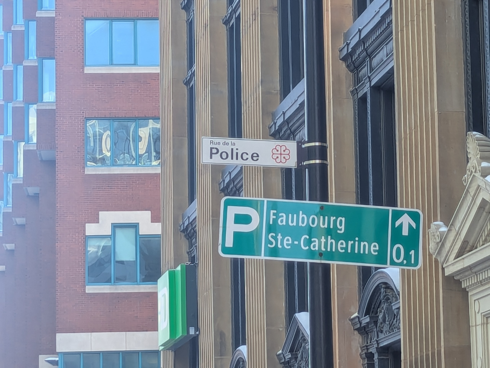
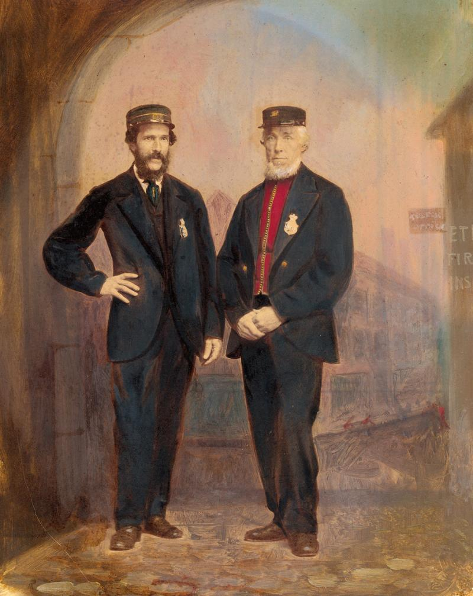
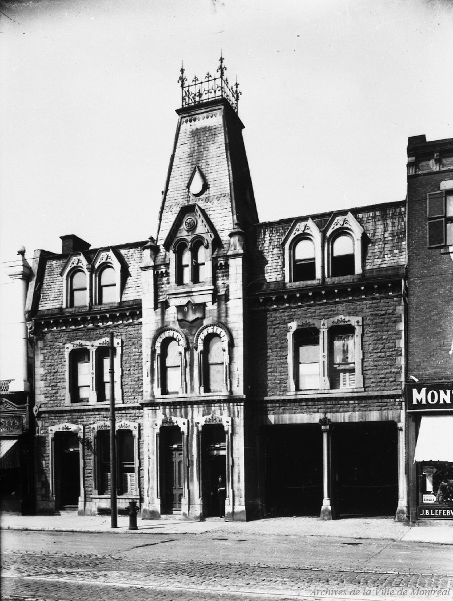
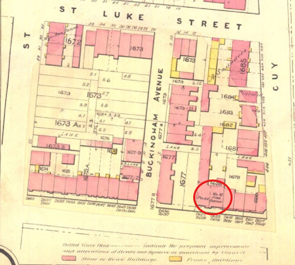
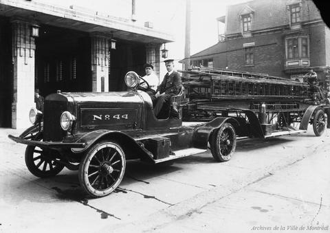
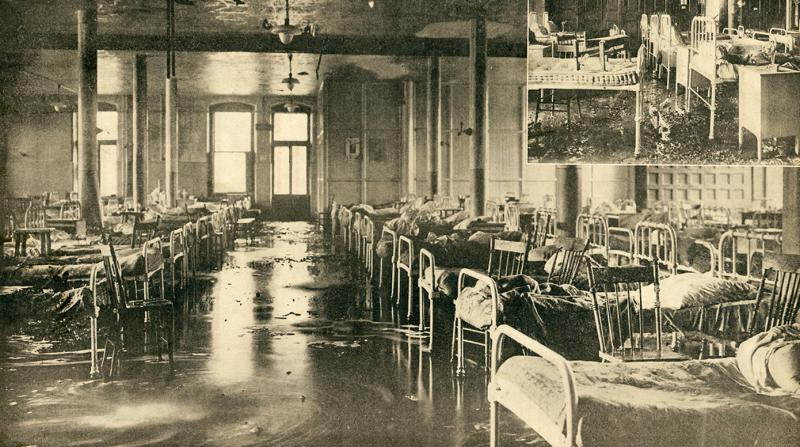
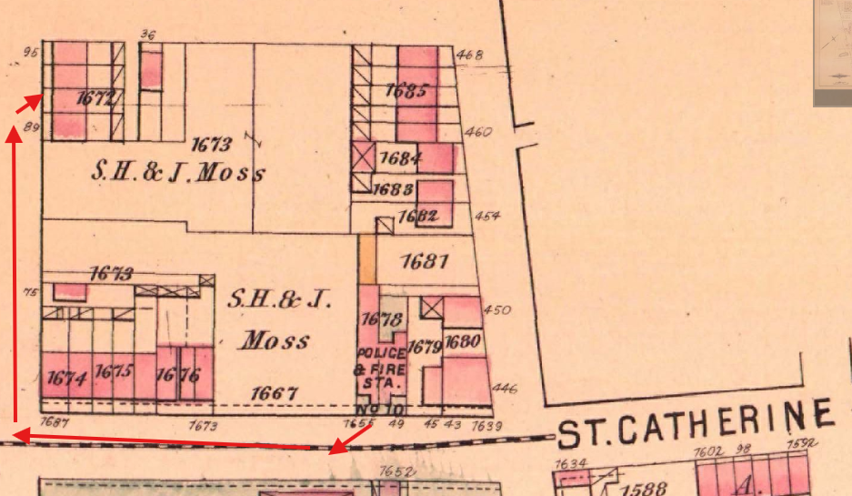

ASGM L082_7Y4A Maison mère, extérieur, s.d.

Rue de la Police — a back lane with a name
Rue de la Police — a back lane with a name
Ville de Montréal — Toponymie
Date de désignation: 10 avril 1876
Origine et signification:
La Cité de Montréal forme son premier comité de police en 1840 et son Département du feu en 1863. Pour ces services, on construit des édifices particuliers, et avec les années, on prend l'habitude de loger sous un même toit le poste de police et la caserne de pompier. En 1875, l'architecte Henri-Maurice Perrault construit le poste no 10, derrière lequel on ouvre une étroite voie de service. Cette voie devient la rue de la Police et conserve cette dénomination après la démolition du poste, en 1931.
montreal.ca/toponymie/toponymes/rue-de-la-police

Chief Alexander Bertram — Canada's first professional fire chief, 1863. Service de sécurité incendie de Montréal.

Montréal (Québec). Service des affaires institutionnelles (1992–1994). Caserne de pompiers no. 10 (789, rue Sainte-Catherine Ouest). Numéro original de la pièce: Z-419.

Goad, Charles E. Atlas of the City of Montreal. Montreal: Chas. E. Goad, 1890. BAnQ, ark:/52327/2244212.
ASGM L082_7Y4A Maison mère, extérieur, s.d.

Postcard of the Motherhouse on fire in 1918. Courtesy BAnQ.

Fire engine, c. 1926. Archives de Montréal, Photographic Collection: Fire Department, ref. Z-419.


Service de sécurité incendie de Montréal — sim.montreal.ca/en/node/553

The move to the new address — relocation of Caserne 10, 1931
Montréal (Québec). Service des affaires institutionnelles (1992–1994). Caserne de pompiers no. 10 (789, rue Sainte-Catherine Ouest). Numéro original de la pièce: Z-419.
Montréal (Québec). Service des affaires institutionnelles (1992–1994). Caserne de pompiers no. 10 (789, rue Sainte-Catherine Ouest). Numéro original de la pièce: Z-419.
Primary Sources — Newspapers (BAnQ Numérique)
Le Devoir, 15 février 1918
Le Canada, 15 février 1918
Le Canada, 16 février 1918
La Patrie, 15 février 1918
La Patrie, 18 février 1918
La Patrie (hebdomadaire), 21 février 1918
Montreal Weekly Witness, 19 February 1918
L'Étoile du Nord, 21 février 1918
Montreal Gazette, [fragment]
Primary Sources — Cartographic
Hopkins, H.W. Atlas of the City and Island of Montreal. Provincial Surveying and Pub. Co., 1879. BAnQ.
Goad, Charles E. Atlas of the City of Montreal. Chas. E. Goad, 1890. BAnQ.
Goad, Charles E. Atlas of the City of Montreal and Vicinity. Chas. E. Goad, 1912–1914. BAnQ.
Primary Sources — Archival
Archives de Montréal. Photographic Collection: Fire Department. Refs. Z-419, Z-441, Z-447.
Ville de Montréal. "Rue de la Police." Toponymie de Montréal.
McRobie, William Orme. Fighting the Flames! Montreal: "Witness" Printing House, 1881.